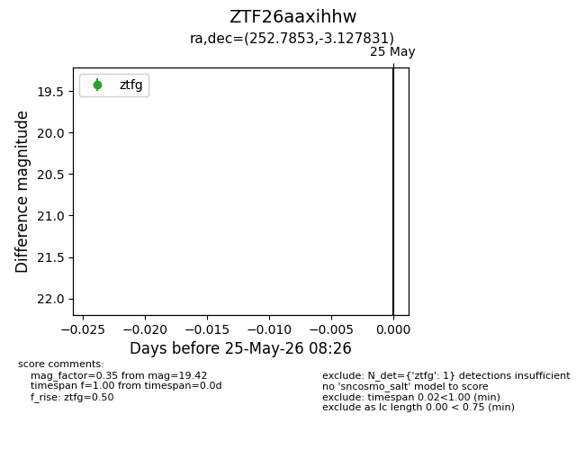
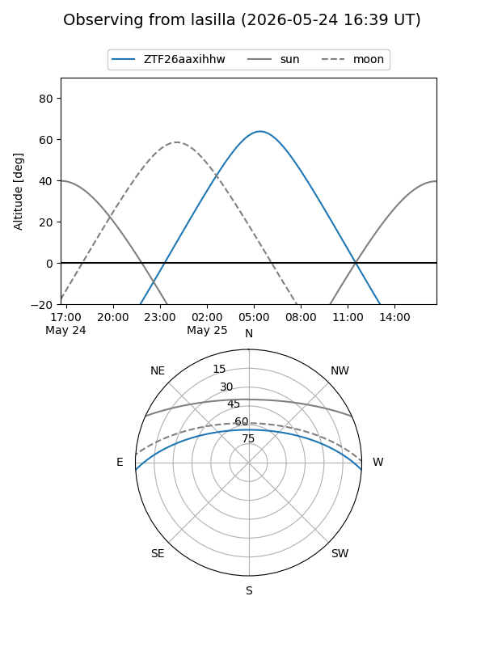
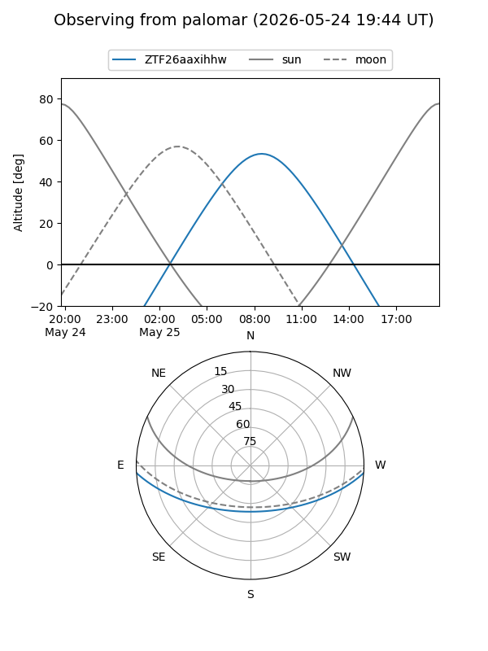

ZTF26aaxihhw
Target ZTF26aaxihhw at 2026-05-25 08:27
Aliases and brokers:
lsst-FINK: link
lsst-Lasair: link
lsst-ALeRCE: link
ztf-FINK: link
ztf-Lasair: link
ztf-ALeRCE: link
alt names
ZTF26aaxihhw (ztf,fink_ztf)
Coordinates:
equatorial (ra, dec) = 252.7853,-3.12783
equatorial (HMS+DMS) = 16:51:08.47,-03:07:40.19
galactic (l, b) = (15.1743,+24.86281)
Flags:
Photometry:
last ztfg=19.42
1 ztfg detections
Lightcurve

Visibility


Additional plots